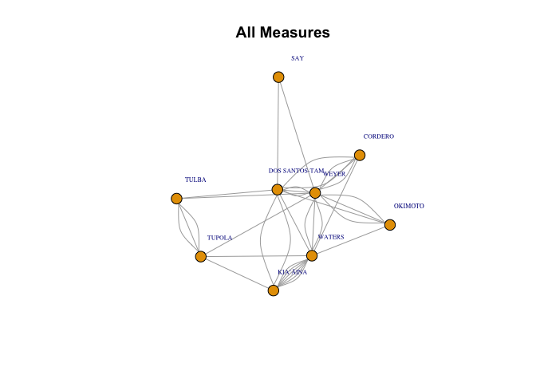

The hnlcouncilR package provides some helper functions to download data about Honolulu City Council measures from https://hnldoc.ehawaii.gov/hnldoc/measure and export them in more user friendly format. It also currently contains one data visualization function that creates a network graph to show which city council members co-introduce measures together. More features will be coming over time. If you have a special request, feel free to create an issue requesting new features.
Installation
You can install the development version of hnlcouncilR from GitHub with:
# install.packages("pak")
pak::pak("rentzb/hnlcouncilR")Example
This is a basic example of how to use the package
library(hnlcouncilR)
# download data about measures
measures_df <- get_council_measures(start_measure = 2796, end_measure = 3162)
# extract more detailed information about the votes
votes_df <- get_votes(measures_df)
# visualize the co-introductions
cointro_network_graph(measures_df, type = "all")